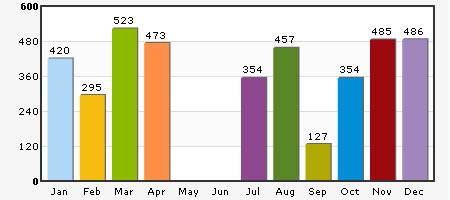
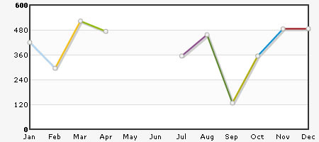
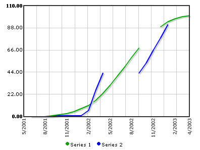

Plotting Discontinuous data |
You might often want to plot charts with incomplete data points - i.e., missing data. For example, when plotting a monthly sales chart, you might not have data for all the months. So, you might just want to indicate the missing data with a blank space on the chart not plotting anything at that particular place. FusionCharts lets you do this very easily. Consider the following XML: |
| <graph> <set name='Jan' value='420' /> <set name='Feb' value='295' /> <set name='Mar' value='523' /> <set name='Apr' value='473' /> <set name='May' /> <set name='Jun' /> <set name='Jul' value='354' /> <set name='Aug' value='457' /> <set name='Sep' value='127' /> <set name='Oct' value='354' /> <set name='Nov' value='485' /> <set name='Dec' value='486' /> </graph> |
| Here, we do not have data for May and June. So, we're not providing any value attribute for the same. The chart will look as under: |
|  |
You can see that there are no columns for May and June in this chart. If you run the same data against a line chart, you'll see the following output: |
|  |
The line chart shows a break for May and Jun as there's no data for the same. If you do not even have data labels for the missing data, you can write empty set elements for the missing data as under: <set /> |
Multi-series charts can plot discontinuous data too. For example : |
|  |
And, the data for this is as under: |
| <graph caption='Discontinuous Data Demo' numdivlines='4' showgridbg='1' showhovercap='1' lineThickness='1' animation='1' hoverCapSepChar=' ' anchorScale='0' showNames='1' showValues='0' numVDivLines='12' anchorscale='0' rotateNames='1'> <categories> <category name='5/2001' showName='1'/> <category name='6/2001' showName='0'/> <category name='7/2001' showName='0'/> <category name='8/2001' showName='1'/> <category name='9/2001' showName='0'/> <category name='10/2001' showName='0'/> <category name='11/2001' showName='1'/> <category name='12/2001' showName='0'/> <category name='1/2002' showName='0'/> <category name='2/2002' showName='1'/> <category name='3/2002' showName='0'/> <category name='4/2002' showName='0'/> <category name='5/2002' showName='1'/> <category name='6/2002' showName='0'/> <category name='7/2002' showName='0'/> <category name='8/2002' showName='1'/> <category name='9/2002' showName='0'/> <category name='10/2002' showName='0'/> <category name='11/2002' showName='1'/> <category name='12/2002' showName='0'/> <category name='1/2003' showName='0'/> <category name='2/2003' showName='1'/> <category name='3/2003' showName='0'/> <category name='4/2003' showName='1'/> </categories> <dataset seriesname='Series 1' color='00A900' showValue='0' lineThickness='2' yaxismaxvalue='100' anchorAlpha='0'> <set /> <set /> <set /> <set value='0' /> <set value='1' /> <set value='2' /> <set value='3' /> <set value='5' /> <set value='8' /> <set value='11' /> <set value='16' /> <set value='23' /> <set value='31' /> <set value='40' /> <set value='49' /> <set value='59' /> <set value='68' /> <set /> <set /> <set value='89' /> <set value='94' /> <set value='97' /> <set value='99' /> <set value='100' /> </dataset> <dataset seriesname='Series 2' color='0000FF' showValue='0' lineThickness='2' yaxismaxvalue='100' anchorAlpha='0'> <set /> <set value='0' /> <set value='0' /> <set value='0' /> <set value='0' /> <set value='1' /> <set value='1' /> <set value='1' /> <set value='1' /> <set value='6' /> <set value='26' /> <set value='43' /> <set /> <set /> <set /> <set /> <set value='43' /> <set value='53' /> <set value='66' /> <set value='78' /> <set value='91' /> <set /> <set /> <set /> </dataset> </graph> |